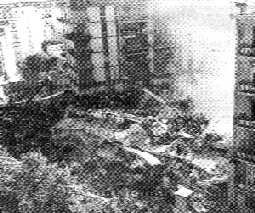
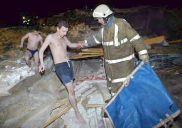
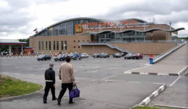
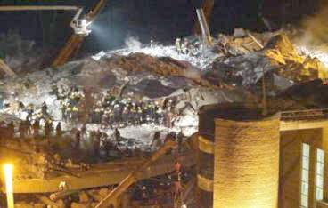
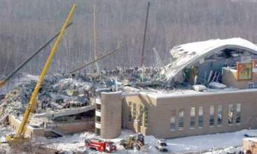

"Zum Fegfeuer" Der etwas andere Klosterladen
"Zum Fegfeuer" Der etwas andere Klosterladen

Als Alternative zur Stahlbetonbauweise für Fabrik- oder Lagerhallen, Supermärkte und andere Großbauwerke gäbe es beispielsweise auch Breitflachstahl. Neben Lebensmittelkonservendosen oder Autokarosserien kann man damit auch tragende Baukonstruktionen errichten. Entsprechend Budget und gestalterischem Anspruch gibt es also viele Möglichkeiten, Großgebäude auch ohne dämmstoffbeklebte oder frei bewitterte Stahlbetonfassaden zu verwirklichen. Wobei dann freilich der Brandschutz geklärt werden muß. Doch auch dafür gibt es nicht nur die brandhemmende Anstriche oder Verkleidungen.
Warum also so oft Ingenieurbauwerke aus Stahlbeton? Vielleicht, weil es dafür eine gut softwaregängige bzw. gut von Hand zu rechnende Formelsammlung gibt? Ob die auch nach 5 Jahren Karbonatisierungsangriff und chemischer Korrosion des rostverseuchten Baustahls noch stimmt? Diese Frage ist dem Inschenör auch mal zu schwör.
Durchaus von Interesse für den meist auf die Baustahlkorrosion fixierten Tunnelblick der Betonsanierer könnte dieses Zitat zum Kristallisationsphänomen von Prof. Dr. Wolfgang Vetters, Institut für Geologie der Universität Salzburg, sein - Thema:
Näheres für Stahlbetonfreaks in: Schießl, P.; Weydert, R.: Überwachungssysteme für die Korrosionsgefahr des Stahles im Beton. Institut für Bauforschung (ibac), RWTHAachen, Juli 1998
Näheres in: Eibl, J.;Idda, K.; Lucero-Cimas, H.-N.: Verbundverhalten bei Querzug. Schlussbericht. Institut für Massivbau und Baustofftechnologie, Universität Fridericiana zu Karlsruhe (TH), Juni 1998.
Näheres zum Thema und eine angeblich praxistaugliche Rezeptur in: Wiens, U: Erweiterte Untersuchungen zur Alkalität von Betonen mit hohen Puzzolangehalten. Abschlussbericht. Institut für Bauforschung, RWTH Aachen, Nov. 1998.
Lesenswert dazu: Grübl, P.; Kern, R.;: Wirksamkeit von Nachbehandlungsverfahren. Schlußbericht, Institut für Massivbau, Techn. Universität Darmstadt, Juli 1997.
Süddeutsche Zeitung 25.1.1988:
Stahl und Beton bürgen immer noch gleichsam symbolhaft für die Beständigkeit von technischen Bauten. Allerdings gibt es immer wieder unerwartete Unfälle mit nicht mehr standfesten Stahl-Beton-Konstruktionen. Die Bundesanstalt für Materialforschung und -prüfung (BAM) in Berlin weist in diesem Zusammenhang besonders auf zwei neuere Unfälle mit Kindern hin: Kürzlich wurde ein Kind durch ein umstürzendes Klettergerüst verletzt; in einem anderen Fall tötete eine umfallende Skulptur ein spielendes Kind. Die Ursache: Die Stahlverankerungen in den Betonfundamenten waren durch Kontaktkorrosion unbemerkt zerstört worden.
Im einzelnen spielen sich bei der Kontaktkorrosion die gleichen elektrochemischen Vorgänge ab, wie in einem galvanischen Element oder auch in einem Bleiakkumulator. Taucht man zwei Stifte aus verschiedenen Metallen in ein Wasserbad, dem man etwas Säure zugegeben hat, um es elektrisch leitend zu machen, so kann man zwischen ihnen - ähnlich wie an den Polen eines Akkumulators - eine elektrische Spannung messen. Diese ist desto größer, je weiter voneinander entfernt beide Metalle in der chemischen Spannungsreihe sind, je edler also das eine und je unedler das andere Metall ist. Eine Drahtverbindung außerhalb des Wassers zwischen beiden Stiften schließt den Stromkreis. Im Wasserbad fließt nun ein Strom geladener Materieteilchen (Ionen) vom unedleren zum edleren Metall. Das unedlere Metall "geht in Lösung". Der Metallstift verschwindet mit der Zeit. Wie ist dieses elektrochemische Phänomen nun auf die Vorgänge am Betonfundament zu übertragen?
Wird ein Stahlanker in Beton eingebettet, so wird seine Oberfläche durch den Beton chemisch verändert; es bildet sich eine sehr dünne Schutzschicht. Durch diese "Passivierung" wird der einbetonierte Teil des Ankers elektrochemisch gesehen edler als der herausragende Teil: die beiden unterschiedlich edlen Pole des galvanischen Elementes sind damit vorhanden. Die Drahtverbindung zwischen den Elektroden erübrigt sich, denn der Anker selbst verbindet ja sein edles mit seinem unedlen Ende.
Wasser, das im Freien allgegenwärtig ist, umgibt Stahlanker und Betonfundament und ersetzt das leitende Wasserbad. Der elektrische Strom in dem Element kann fließen und der unedlere Teil des Ankers beginnt in Lösung zu gehen. Durch Wasser und Sauerstoff wird das Eisen sofort weiter oxidiert, die Rostbildung wird erheblich beschleunigt. So wird der der Stahl außerhalb des Betons zersetzt bis die Statik nicht mehr stimmt. Das Gebilde bricht schließlich unerwartet und scheinbar grundlos zusammen.
Obwohl diese Vorgänge schon länger bekannt
sind, werden sie häufig nicht genügend berücksichtigt. Üblicherweise
entwickelt sich die Kontaktkorrosion meist im Verborgenen und wird oft
oft erst zu spät entdeckt. Die Wissenschaftler der BAM apellieren
daher an alle Verantwortlichen, die Standfestigkeit von Gegenständen,
die durch diese Korrosion gefährdet könnten, regelmäßig
und gründlich zu untersuchen. Noch besser wäre es, anfällige
Verankerungen aus unlegiertem Stahl durch solche aus nichtrostendem Chrom-Nickel-Molybdän-Stahl
zu ersetzen, denn da sind die beschriebenen elektrochemischen Vorgänge nicht möglich. [...]
LISELOTTE BECKER"
WÜRZBURG. Tausende von Spannbetondecken in Viehställen sind vom Einsturz bedroht. Darauf hat das Innenministerium hingewiesen. [...] Auf Grund der hohen Feuchtigkeit in Viehställen könnte es zur Korrosion der im Beton eingebetteten Spanndrähte kommen. Dadurch könnten Decken einstürzen, ohne daß vorher Schäden sichtbar geworden sind. Das Innenministerium habe deshalb die Landratsämter angewiesen, die Eigentümer zu informieren und aufzufordern, unverzüglich die Decken abzustützen.
Laut Ministerium sind knapp 6000 Stalldecken betroffen [...]. Die Warnung erfolgte auf Grund mehrjähriger Untersuchungen bei den drei [Hersteller-] Firmen, die nach dem Einsturz zweier Stalldecken in den Jahren 1980 und 1984 eingeleitet wurden.
Für die Kosten müßten die Eigentümer
aller Voraussicht nach selbst aufkommen.
Im Hinblick darauf, inwieweit Regreßansprüche
gegenüber den Firmen geltend gemacht werden könnten, zeigte sich
der Sprecher "überfragt". Die Firmen hielten sich nicht für verantwortlich
und argumentierten, daß die Vorschriften nicht ausreichen gewesen seien."
Die "grauenhafte" Materialheimtücke lauert nicht nur in Schweineställen - Obermain-Tagblatt 11.5.1985
USTER. "Erst flackerte das Licht, dann gab es ein Knacken, doch keiner achtete darauf. Plötzlich kam die Decke runter - es dauerte nur fünf Sekunden. Keiner hatte eine Chance, hier herauszukommen."
So schilderte ein Augenzeuge das grauenhafte Unglück im Hallenbad von Uster, der 25000-Einwohner-Stadt bei Zürich, das zwölf Menschen das Leben kostete. [...] Unter den Unglücksopfern, die von den herabstürzenden Betonmassen entweder erdrückt wurden, oder im Schwimmbecken ertrunken sind, ist auch eine Mutter von zwei Kindern.
1972 war der Bau [...] errichtet worden. Es ist ein grauer, schmucklos-moderner Betonklotz mit hohen Fensterfronten. Am Morgen nach dem Unglück bietet sich beim Blick durch die zersplitterten Glasscheiben ein gespenstisches Bild: Fast das ganze 25-Meter-Becken ist wie mit einem grauen Leichentuch aus Beton bedeckt. [...]"
Chloridhaltige Luft führte zu transkristalliner Spannungsrißkorrosion der Stahlbügel, mit denen die Sichtbetondecke abgehängt war. Sekunden nach dem Bruch der Bügel stürzte die Decke ein und begrub zwölf Menschen unter sich.
[...] Die Aufhängebewehrung, Bügel Querschnitt 10 mm, war in ganz unterschiedlichen Höhen gerissen, nämlich oben in der Nähe der Tragkonstruktion bis zur Punktschweißstelle an der Armierung der abgehängten Decke. Die Bruchflächen der Aufhängebewehrung zeigen teils starke Einschnürungen an duktilen, zähen Stäben mit intakten Oberflächen, die nur sehr kleine Lochfraßstellen aufweisen, teils spröde Stellen ohne wesentliche Querschnittsveränderungen, bei welchen bis über 50% der Querschnittsfläche durchkorridiert sind und deren Oberfläche Risse und Flecken aufweisen.[...]
In einzelnen Stäben entstand eine Spannungsrißkorrosion. Voraussetzung dazu ist ein bestimmter Zugspannungszustand im Stahl und das Vorhandensein einer wässrigen Lösung, welche Chlorionen enthält. Nach den ersten Rissen an der Oberfläche der Stahlbügel steigt die Spannung im Stahl an, was die Korrosion zusätzlich beschleunigt. Beim Bruch einzelner Stäbe erhöht sich die Belastung der anderen Stäbe.
Dieser Vorgang setzt sich solange fort, bis bei benachbarten Stäben die Zugfestigkeit und damit die Tragfähigkeit überschritten wird und selbst noch intakte Bügel in einer Art Reißverschlußprinzip einer nach dem anderen abreißen. [...]
Metallurgen wußten schon seit längerer Zeit, daß sogenannter rostfreier Stahl unter bestimmten Voraussetzungen dennoch rosten kann. Diese Erkenntnis ist breiten, praktisch tätigen Kreisen nicht bekannt gewesen und vielleicht auch heute in der allzu großen Informationsflut untergegangen. [....]
Alfred de Luigi"
Also doch - die Desinformationsgesellschaft. Es kommt halt auch bei "Information" darauf an, was man draus macht. Weiteres Informationsbeispiel: Bildzeitung Herbst 1985:
Ein Nostalgiezug der Bundesbahn mit 400 Fahrgästen war gerade unter der 35 Meter langen Spannbetonbrücke bei Kirchen (Siegen) durchgefahren - da krachte der 1,5 Meter breite Gehweg auf die Gleise, riß die Oberleitung. Die Spannbetonbrücke wurde erst vor 12 Jahren für 670.000 Mark gebaut. Die Ursache ist noch unbekannt."
Obermain-Tagblatt 24.4.1999:
Obermain-Tagblatt 3.11.1999:
SANTANDER. Beim Einsturz der Fassade eines Krankenhauses in der nordspanischen Küstenstadt Santander sind vier Angestellte der Klinik getötet worden, 15 weitere erlitten Verletzungen. Zwei Menschen wurden gestern noch unter den Trümmern vermisst.
Bei dem Unglück war die gesamte Betonverkleidung einer Mauer des Hospitals "Marques de Valdecilla" auf einen tiefer gelegenen Gebäudeteil gestürzt, in dem sich Operationssäle und Büroräume befanden.
Die Trümmer durchschlugen das Dach des Vorbaus und zerstörten das Gebäude fast vollständig. Offenbar war die Bausubstanz der Fassade in einem schlechten Zustand gewesen.
Zunächst war vermutet worden, eine Gasexplosion habe den Einsturz verursacht. Diese Hypothese wurde später verworfen. Die Fassade hatte sich ab der Höhe des siebten Stockwerks gelöst.
In einem der Operationssäle musste wegen des Unglücks eine Herzoperation abgebrochen werden."
Obermain-Tagblatt 12.11.1999 (S.1):
Rettungskräfte suchten gestern im süditalienischen Foggia nach Überlebenden in den Trümmern eines fünfstöckigen Wohnhauses, das in der Nacht zuvor binnen Sekunden eingestürzt war. Bis zu 50 Todesopfer werden befürchtet. Ursache der Katastrophe waren nach ersten Ermittlungen Baumängel."

Foggia 11.11.1999: Das eingestürzte Stahlbeton-Wohnhaus. Es ist 30 Jahre alt geworden. Original-Bildunterschrift: "Nur ein rauchender Trümmerhaufen, in dem Helfer verzweifelt nach Überlebenden suchen, blieb von dem Mietshaus in Foggia übrig." (Foto: Scan aus Obermain-Tagblatt, dort ohne weiteren Bildnachweis)Der Artikel auf S. 22:
FOGGIA
Beim Einsturz eines Mietshauses im süditalienischen
Foggia sind vermutlich bis zu 50 Menschen ums Leben gekommen. Das fünfstöckige
Gebäude stürzte mitten in der Nacht zu gestern nach ersten Ermittlungen
wegen Baumängeln innerhalb von Sekunden in sich zusammen. 70 Bewohner
wurden unter den Trümmern begraben. Unmittelbar nach dem Unglück regte sich erste Kritik an laxen Baubehörden.
Retter gruben teilweise mit bloßen Händen in den Schuttbergen nach Überlebenden. Die 25-jährige Nica Crincoli zog ihren einjährigen Neffen Antonio Raio mit bloßen Händen aus dem Trümmerberg. "Ich habe seine Hand gesehen und wie eine Wilde gesehen und wie eine Wilde gegraben." Das Kind habe zuerst geweint, dann sei es plötzlich ganz still geworden und in einen Schock verfallen. Das Areal mitten in einem Wohngebiet sah aus wie nach einem Bombeneinschlag. Von dem 30 Jahre alten Gebäude blieb nur ein drei Meter hoher Trümmerhaufen übrig, unter dem auch der Bauherr des Gebäudes begraben wurde, der selbst dort wohnte.
Weinende Angehörige
Auf Treppen der Nachbarhäuser in der Via Giotto drängten sich weinende Angehörige. Sie beteten für ihre verschütteten Verwandten. Ein "Zwillingsgebäude" des Unglückshauses, das 1968 vom selben Bauherr errichtet worden war, wurde vorsichtshalber geräumt. Das Unglück ereignete sich gegen drei Uhr morgens und überraschte die Menschen im Schlaf. Ein Mann, der sich mit seiner Familie retten konnte, hatte kurz zuvor ein bedrohliches Rumoren gehört. Er versuchte vergeblich, Mitbewohner zu warnen: "Ich habe Sturm geklingelt bei den anderen Mietern, aber nach wenigen Minuten stürzte das Haus in einer gewaltigen Staubwolke in sich zusammen."
Millionen Häuser überprüfen
Angeblich wurden an dem Gebäude erst kürzlich Bauarbeiten ausgeführt. Bereits seit Tagen soll es bedrohlich geknarrt haben. Erst vor knapp einem Jahr war ebenfalls wegen Baumängel ein Mietshaus in Rom eingestürzt. 27 Menschen kamen ums Leben. "Dies beginnt zu einem wiederkehrenden und beunruhigenden Phänomen zu werden", kritisierte der Chef des italienischen Zivilschutzes, Franco Barberi. Ingenieure meinten, die tragenden Pfeiler des Hauses seien nicht ausreichend mit Eisen verstärkt worden. Ein Geologe sagte, wegen des vor allem in Süditalien weit verbreiteten "wilden Bauens" müssten etwa 25 Millionen Häuser überprüft werden.
Die Staatsanwaltschaft in Foggia eröffnete eine Ermittlung wegen fahrlässiger Tötung gegen Unbekannt. In den vergangenen 20 Jahren starben bei acht größeren Hauseinstürzen in Italien mehr als 150 Menschen."
Ortung von Spannstahlbrüchen
Näheres in: Hillemeier, B.; Scheel, H.: Ortung von Spannstahlbrüchen in metallischen Hüllrohren. Abschlußbericht, Institut für Bauingenieurwesen, FG Baustoffkunde und Baustoffprüfung, TU Berlin, August 1996
Näheres in: Mietz, J.; Pasewald, K.; Isecke, B.: Untersuchungen zum wasserstoffinduzierten Sprödbruch vergüteter Spannstähle. Bundesanstalt für Materialforschung Berlin, Jan. 1998
- Unplanmäßige Risse, die die Spannbewehrung kreuzen,
- Plötzliche Brüche empfindlicher Spannstähle,
- Abgeminderte Ermüdungsfestigkeiten der Spannbewehrung,
- Korrosion der Stahlteile;
- Verringerte Ermüdungsfestigkeit der Spanngliedkopplungen,
- Wasserstoffinduzierte Spannungsrisskorrosion der Spannstähle usw.
Schadensursachen und die möglichen Gegenmaßnahmen faßt zusammen:
König, G.; Schießl, P. u.a.: Dauerhaftigkeit
von Spannbeton, Schlussbericht. Institut für Massivbau und Baustofftechnologie
der Universität Leipzig in Koop. mit den Lehrstühlen für
Baustoffkunde und Massivbau der TU München, Dez. 1998
Balkone an Altbauten aus der Zeit um die Jahrhundertwende können "tickende Zeitbomben" sein. Das berichtet das Sonderheft "besser bauen" der in Hamburg erscheinenden Zeitschrift "Zuhause Wohnen". Gefahr bestehe vor allem durch Rost an den Stahlträgern der Balkone.
In früheren Zeiten sei so genannter Konkretbeton verbaut worden, der poröser sei und mehr Wasser als heutiger Fertigbeton ziehe. Gelange noch Sauerstoff in die Schadstelle, roste das Metall.
[Einschub: Aber heute hat der moderne Beton durch feiner als früher gemahlenen Zement und demzufolge geringeren Zementgehalt eine entsprechend geringere Alkalitätsreserve. Dadurch schreitet die karbonatisierungsbedingte Rostfront erheblich schneller voran als bei "altem" grobzementreichem Beton!]
In der Folge entstehen dann neue Risse, bis kleine, später größere Teile abplatzen. Im schlimmsten Fall könne der Balkon abbrechen.
Besonders bedroht sind dem Bericht zufolge klassische Altbaugebiete in Großstaädten wie Berlin, München und Hamburg. [...] Neben Kontrollen durch Bauprüfungsämter können auch Vermieter und Mieter selbst vorsorgen, und zwar, indem sie auf Risse und aufgeplatzte Stellen im Beton am eigenen Balkon und am darüber liegenden achten. Dort seien mögliche Schadstellen auch daran zu erkennen, dass Träger rostig durchschimmern oder die Farbe abblättert."
Auch die österreichische Fachpresse jammert - Bau&Immobilien Report 10/02:
Rund ein Viertel der neu erbauten Kläranlagen weist erhebliche Schäden in der Betonoberfläche auf. Die Untersuchungen über die Ursachen laufen.
Gemeinden, Abwasserverbände, Versicherungen, Baufirmen und Baustofflieferanten haben ein Problem. Aus Sachverständigenkreisen ist zu erfahren, dass 20 bis 25 Prozent aller in den vergangenen Jahren errichteten Kläranlagen erhebliche Schäden aufweisen. Ähnlich die Situation in der Steiermark, Salzburg und einem weiteren Bundesland. "Es handelt sich um einen lösenden Angriff der Oberfläche", erklärt ein Informant dem Report. Was zur Zerstörung führt, ist derzeit noch nicht klar. Möglicherweise sind es die Rezepturen von hochfesten und sulfatbeständigen Betonen, die in der Önorm B 4710 geregelt sind. ..."
So schön waren noch die Bordellbesuche, die den Härren Enschinör mit dem Kläranlagen-Bauausschuß zusammenschweißten, so fett die Fraßpackerl für den Bürgermeister, und nun dieser Ärger!
Albtraum im Moskauer Spaßbad: Beim Einsturz der modernsten Schwimmhalle der Stadt sind am Samstagabend mindestens 28 Menschen von Trümmern erschlagen worden, davon sechs Kinder.
MOSKAU - Mehr als 110 Erwachsene und Kinder wurden verletzt, als die Betondecke aus 30 Metern Höhe herabfiel. Über Schutt und Glassplitter flüchteten die Badenden in Panik barfuß in die 15 Frostgrade kalte Nacht.

Bis zu 800 russische Rettungsleute suchten am Sonntag teils mit bloßen H#änden, teils mit schwerem Gerät nach Opfern. ...
Als Unglücksursache vermuten Experten Baumängel an dem zwei Jahre alten Aquapark "Transvaal" im südlichen Stadtteil Jassenowo. ...
Tödliche Unglücke mit abgenutzten Bauten der Sowjetzeit sind in Moskau zur traurigen Gewohnheit geworden. Im Jahr 2000 brannte der Fernsehturm Ostankino. ...
Doch der im Sommer 2002 in Betrieb genommene Aquapark "Transvaal" war ein Symbol des neuen, modernen Moskaus.

... Am Samstagabend um 19.15 Ortszeit ... kündigte sich das Unglück mit einem lauten Knall an. Den Schwimmern blieb nur kurze Zeit zur Flucht. Die geschwungene Betondecke stürzte in sich zusammen und riss auch die Glaswände der Halle ein. Die Trümmerflut zermalmte Palmen, Rutschen und den künstlichen Strand.

..."Es ist alles voller Blut", gab eine Journalistin telefonisch an ihre Redaktion durch.
... "Die Kinder haben vor allem Knochenbrüche, Quetschungen und andere Verletzungen", sagte ein Arzt der Morosow Kinderklinik, in der zahlreiche Verletzte behandelt wurden. Außerdem stünden sie unter Schock. Insgesamt wurden 90 Verletzte in Krankenhäusern ärztlich versorgt.
Das Kuppeldach sei nicht wie zunächst angenommen unter der Schneelast kollabiert, sagte Moskaus Bürgermeister Luschkow.

Architekten vermuten einen Konstruktions- oder Materialfehler des von einer türkischen Firma errichteten Baus. Auch könnte der Gegensatz zwischen der heißen, feuchten Luft innen und dem Frost außen die Betondecke mürbe gemacht haben. ... (dpa)
MOSKAU - Nach dem Einsturz der gigantischen Betondecke im Moskauer Aquapark haben die Rettungskräfte die Hoffnung auf Überlebende aufgegeben. Gestern Abend lag die Zahl der Todesopfer offiziell bei 25. Bis zu 13 weitere Badegäste werden noch vermißt. Ermittler bezeichneten Konstruktionsmängel wie auch Pfusch am Bau als mögliche Ursachen. Präsident Wladimir Putin sprach von einer Tragödie und forderte eine Bestrafung der Verantwortlichen. ...
Die 5000 Quadratmeter große Decke was am Samstagabend eingestürzt, mehr als 100 Menschen wurden verletzt. Die Rettungskräfte stellten ihre Suche nach Überlebenden gestern ein. (dpa)